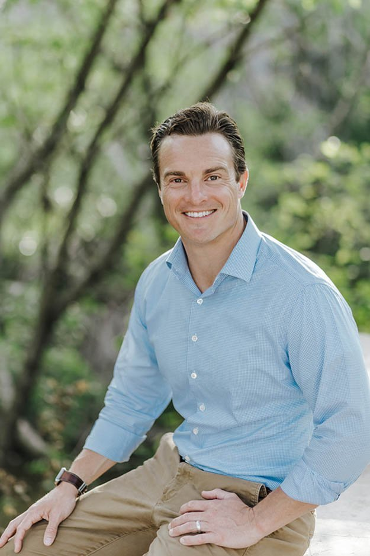
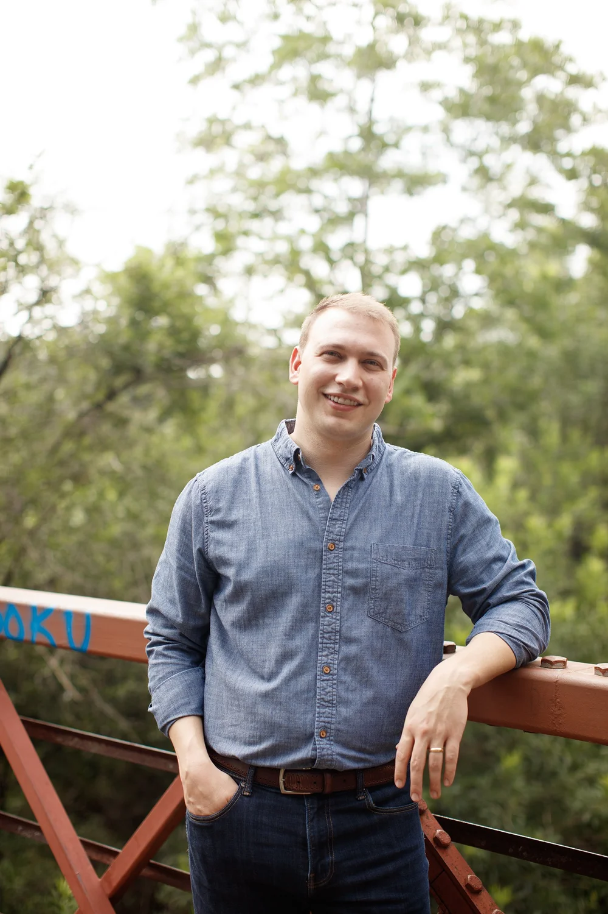

Wayfinder is built around a deliberate choice: stay lean, stay nimble, and bring differentiated expertise to every partnership. Our team's combined experience spans 13,000+ multifamily units across 40+ communities, $2B+ in development and acquisitions, and decades of relationships in the markets where we work.

Mac is Co-Founder and Managing Principal of Wayfinder. He oversees the development operations of the company, spearheads fundraising, and helps manage capital allocation across all investment types.
Mac has developed 13,000+ multifamily units throughout Texas with a total valuation of more than $2 billion. Before starting Wayfinder, he served 8½ years as Managing Director of Development at OHT Partners (formerly Oden Hughes), a full-service real estate company specializing in development, construction, and fund management. Prior to this, Mac was a Development Associate at Simmons Vedder Partners where he also specialized in multifamily.
Mac's career in real estate began while earning his BBA in Finance on a full-ride scholarship at the University of Texas at Austin. He obtained his real estate license as a sophomore before initiating a trend of student agents focused on campus-area leasing and sales. Upon graduation, Mac went on to become a licensed broker and co-founded his own firm, Austin City Realty, which he successfully managed until his transition into the development world.
Mac's fascination with real estate in general — and apartments in particular — began at a very early age. He moved over two dozen times during his youth and into adulthood. Every new residence he called "home" brought to bear its own set of amenities as well as imperfections, instilling in him a growing appreciation for the spaces that surrounded him. He credits this experience for much of his passion toward the industry today.
Mac is in the Advisory Council of the Real Estate Center at the University of Texas, sits on the Board of the Real Estate Council of Austin, and serves on the Advisory Committee of Austin Community Foundation. Previously, KIPP Texas Public Schools retained a lot of Mac's focus. He served on the Board of Directors in Austin for 5 years. In 2018, Mac was named Greater Austin's Volunteer Fundraiser of the Year by the Association of Fundraising Professionals and the Austin American Statesman, for his tireless dedication to supporting KIPP's mission of providing a quality education for Austin's most economically disadvantaged. Today, Mac lives in Central Austin with his wife Vanessa, and sons McCammon and Holden.
As Co-Founder and Managing Principal of Wayfinder, Chris leads investment strategy, capital formation, and strategic partnerships for the firm. Drawing on a diverse background in real estate and operating business investing, he plays an integral role in sourcing and structuring high-conviction opportunities across Wayfinder's target markets.
Chris began his career in commercial mortgage banking at Texas Realty Capital, where he built a foundational understanding of capital markets and real estate finance. Amid the Global Financial Crisis, he joined JLM Financial, an Austin-based firm focused on acquiring non-performing commercial real estate loans. At JLM, Chris underwrote and performed due diligence on over $300 million in loan portfolios and later served as Director of Operations, overseeing property management, debt placement, and dispositions.
He later served as Managing Partner and Chief Investment Officer at Caprock Partners, a family office formed to manage investments for the co-founders of Quantum Energy Partners. At Caprock, Chris led real estate and private equity investments across the U.S., with a focus on low-tech, high-barrier-to-entry assets. These were active, hands-on investments requiring deep operational engagement and strategic execution.
The firm's strong emphasis on wealth preservation gave Chris a deep appreciation for the personal nature of investing and helped fine-tune his approach to risk mitigation, stewardship, and alignment. That experience ultimately reignited his entrepreneurial drive and brought him back to the U.S. full-time, where the vision for Wayfinder took root.
Chris holds a BBA in Finance from the McCombs School of Business at the University of Texas at Austin. He lives in Austin with his wife, Paige, and their two children, Marigold and Leo. He is a member of the Entrepreneur's Organization (EO) in Austin, reflecting his passion for entrepreneurship and business leadership.
As a family, the Sipes prioritize charitable efforts aimed at maximizing impact in childhood development and education — an area that holds deep meaning for Chris, who was the first in his extended family to graduate from college. Outside of work, he enjoys fly fishing, college football, and planning the family's next adventure.

Matt oversees acquisition, portfolio management, and research functions across all stages of the investment process. Prior to joining Wayfinder in 2023, he was VP of Investments at Artesia Real Estate, an Austin-based private equity firm he had joined as an intern while earning his degree at UT Austin.
At Artesia, Matt executed $608M in real estate transactions across 130+ deals and invested $224M across 33 properties on behalf of Artesia's investors — including 1,535 multifamily units, 510 hotel rooms, 140 acres of urban infill land, and 240k square feet of adaptive re-use creative office.
When Wayfinder was founded in 2019, Mac and Chris shared office space with Artesia at the white 2-story Victorian on San Marcos and East Cesar Chavez Street. It was during that time their friendship grew — little did they know that a few years later, they'd get the chance to work together.
Matt lives in Bee Cave with his wife Macey and their daughter Margot and son Luke. He mentors students at UT Austin and sits on the University's Associate Council of the Real Estate Center.
Sam assists in every stage of the development process — site sourcing, market research, financial modeling, design-development, and project coordination support.
Born and raised in Austin, Sam developed an affinity for real estate at a very early age. He picked up odd jobs in the industry throughout his youth, getting first-hand exposure to development, construction, and property management. Sam left Texas to study at the University of Oregon, where he obtained a degree in Applied Economics & Business from the College of Arts and Sciences. Upon graduating in 2020, he returned home and "cut his teeth" in Wayfinder's analyst program before expanding into his current role as an Associate.
Sam spends most of his spare time in the great outdoors, making regular treks to South Texas and the coastal flats around Rockport — landscape photography, hiking, hunting, and fishing.
Jonathan oversees the company's financial operations, accounting practices, and internal reporting. He supports the organization's overall financial health by ensuring accuracy, consistency, and transparency in all fiscal processes — drawing on years of experience overseeing complex financial structures and implementing internal controls.
Jonathan was born and raised in Mobile, AL, and attended the University of South Alabama's Mitchell College of Business for his degree in Accounting. Before moving to Austin in 2023, he lived in New Orleans for 10 years, where he served as controller for a family-run consulting and financial brokerage firm. In Austin, he previously worked for a research and development company producing materials and products for the U.S. military.
Jonathan and his wife moved to Austin to be part of a thriving community. He has been an avid runner for over 25 years, and when he's not running, he can be found with a camera in hand — a practice of slowing down and documenting life that he developed in New Orleans.
If you'd like to discuss a potential project or a partnership, we'd be glad to hear from you.
Get in Touch →